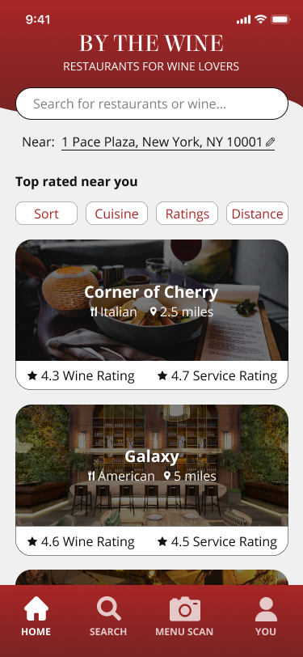
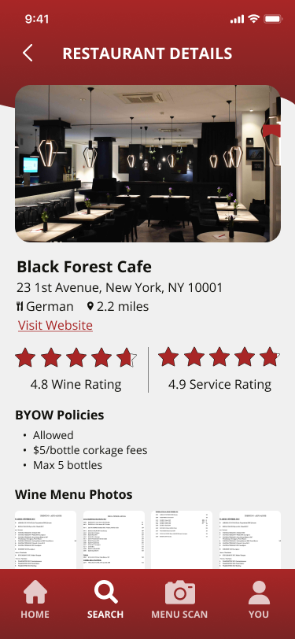
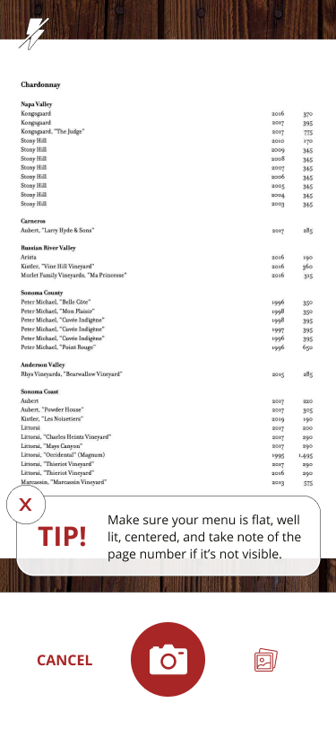
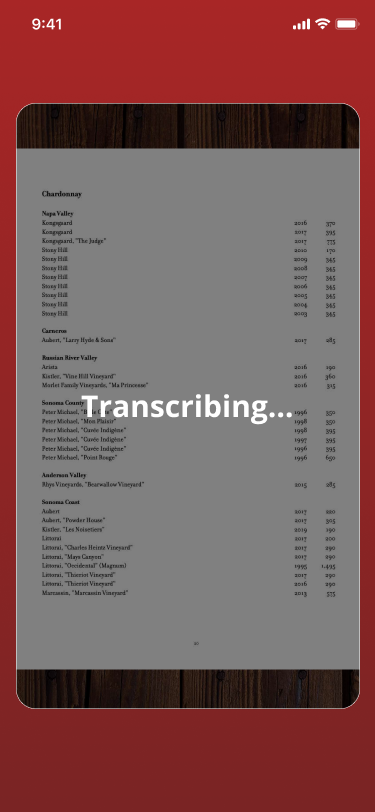
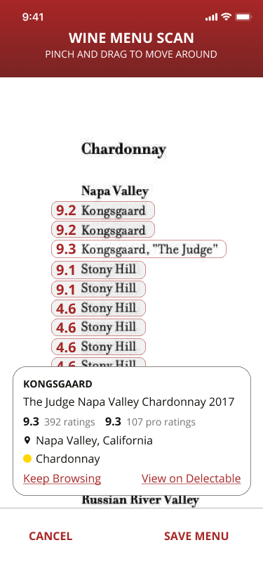
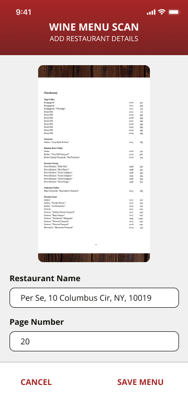

| 
Home
The main menu when a user opens the app, allows them to search for restaurants, scan a menu, or check their profile. |

Restaurant Details
All the information about restaurants can be viewed here, with BYOW info, wine menu scans and photos from other users, as well as reviews. |

Menu Scan
What the user sees when snapping a photo of a wine menu. They can also see the tip to guide them or exit out of the tip. |
| 
Transcribing
User waits for the app to transcribe their menu. |

Scan Results
User can see the wine profile preview from the linked wine rating app source (in this case, modeled after Delectable), and may choose to go off the By The Wine app to view more. |

Save Menu
User can enter in the restaurant name and wine menu page number to save it to their profile to check again later. |